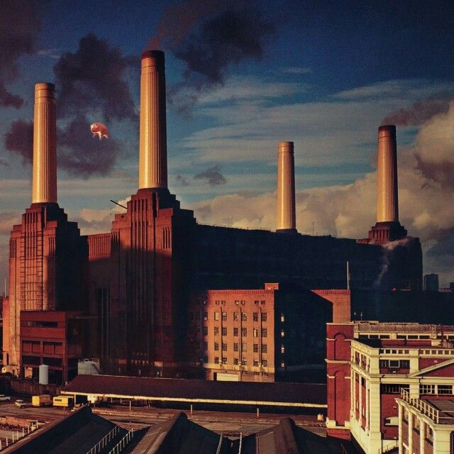

Wish You Were Here

Melhores músicas
1.Shine On You Crazy Diamond
2.Welcome To The Machine
3.Have a Cigar
4.Wish You Were Here
The Wall

Melhores músicas
Disco 1
1.In The Flesh?
2.The Thin Ice
3.Another Brick In The Wall, PT. 1
4.The Happiest Days Of Our Lives
5.Another Brick In The Wall, PT. 2
6.Mother
7.Goodbye Blue Sky
8.Empty Spaces
9.Young Lust
10.One Of My Turns
11.Don't Leave Me Now
12.Another Brick In The Wall, PT. 3
13.Goodbye Cruel World
Disco 2
1.Hey You
2.Is There Anybody Out There?
3.Nobody Home
4.Vera
5.Bring The Boys Back Homebr>
6.Comfortably Numb
7.The Show Must Go On
8.In The Flesh
9.Run Like Hell
10.Waiting For The Worms
11.Stop
12.The Trial
13.Outside The Wall
Animals
Melhores músicas
1.Pigs on the Wing, Part 1
2.Dogs
3.Pigs (Three Different Ones)
4.Sheep
5.Pigs on the Wing (Part 2)